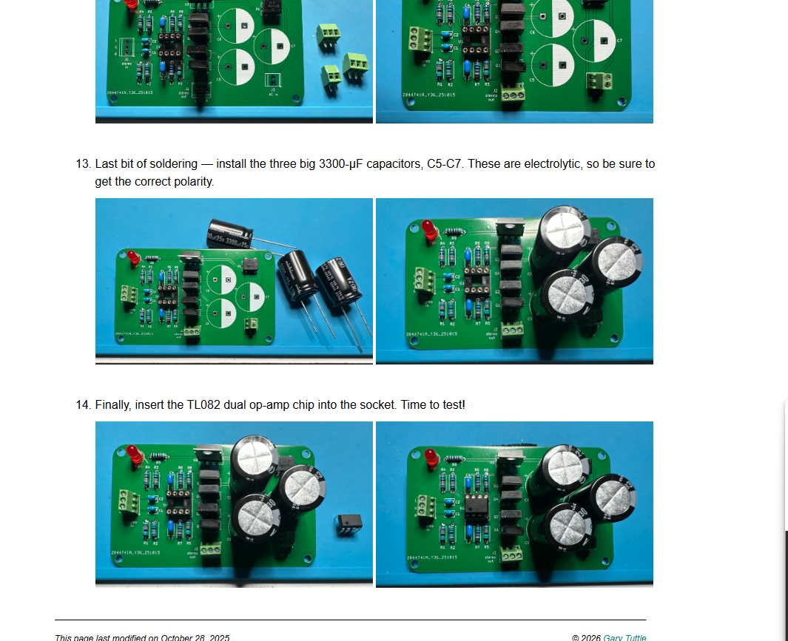
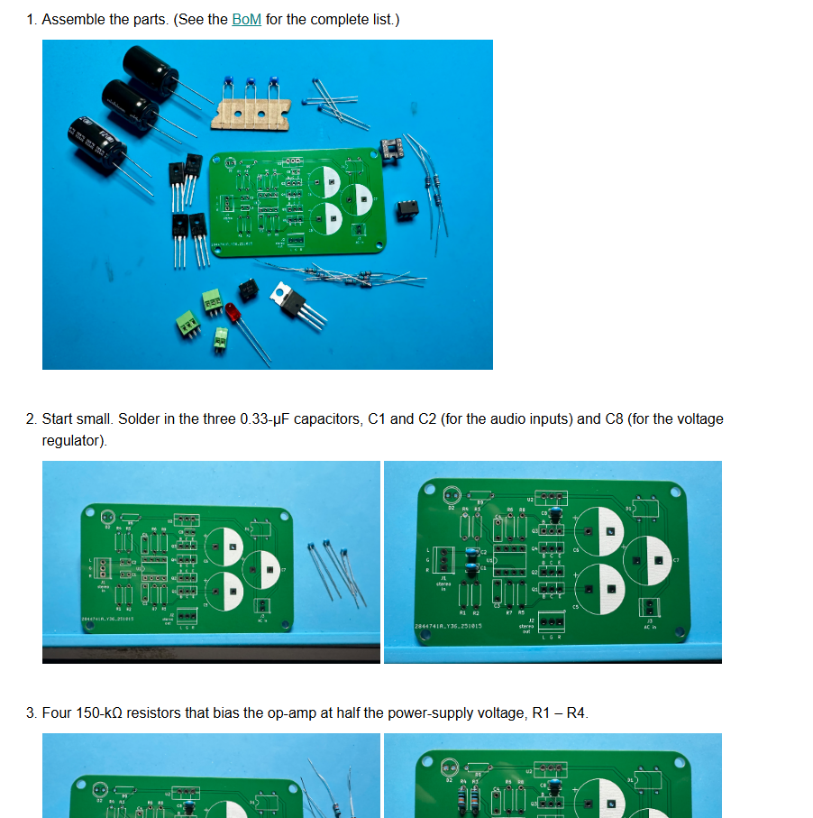
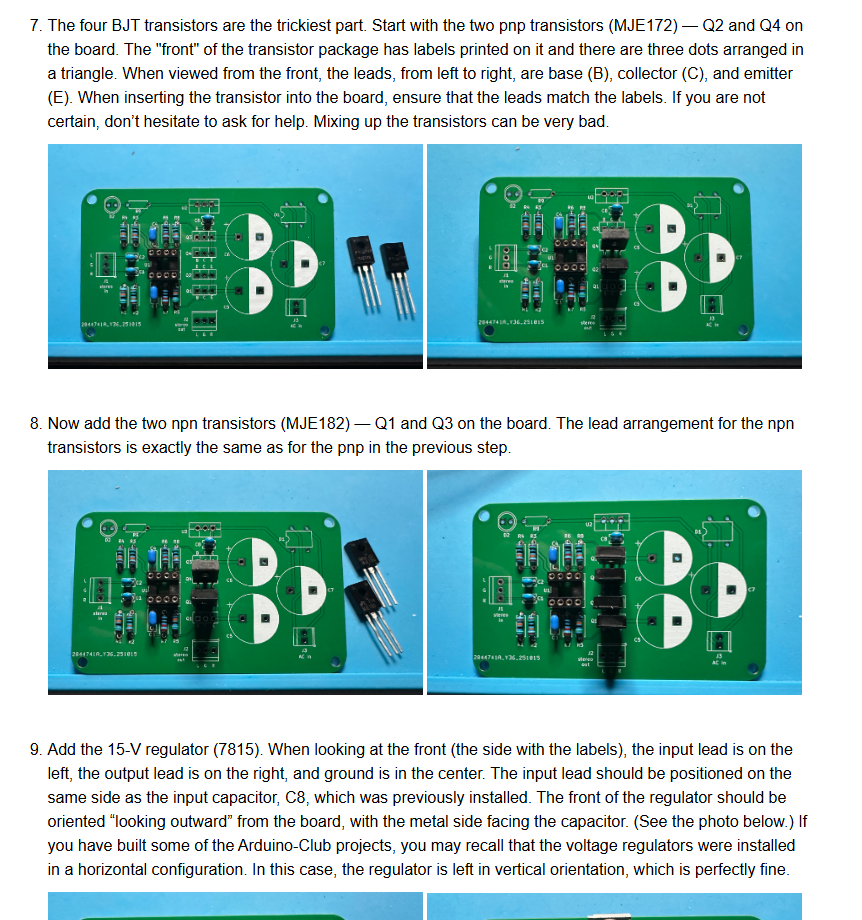

Personal · Audio Arduino Club
GTDT
Desktop Amp.
From headphone-level amplification to desktop speakers.
A stereo desktop amplifier I built in Audio Arduino Club under Dr. Gary Tuttle, using op-amp gain stages and bipolar transistor outputs.

Situation
Drive a larger audio load
The GTDT design extends the basic headphone-amplifier approach to desktop speakers. It combines voltage gain with an output stage that can supply more current.
Task
Assemble the stereo amplifier
I built the club’s GTDT circuit under Dr. Gary Tuttle’s guidance. The project connected op-amp feedback, transistor output stages, and power-supply design in one board-level build.
Action
Build the signal and power stages
The design pairs TL082 non-inverting stages with complementary MJE172 and MJE182 transistors. Assembly moves from resistors and small capacitors to the transistors, rectifier, 15 V regulator, connectors, and bulk capacitors. A single supply requires the audio stages to be biased above ground.
Voltage gain followed by current drive
Each TL082 channel uses a 150 kΩ / 10 kΩ feedback network for a nominal midband gain of 16. Complementary MJE172 PNP and MJE182 NPN transistors form the Class-B output stages, adding the current capability needed for desktop speakers. Four 150 kΩ bias resistors establish the half-supply reference for single-supply operation.
| Component / setting | Value and purpose |
|---|---|
| Input & regulator capacitors | Three 0.33 µF capacitors: C1/C2 at the audio inputs and C8 in the regulator section. |
| Bias & feedback | R1–R4: 150 kΩ each. R5/R8: 150 kΩ; R6/R7: 10 kΩ. C3/C4: 3.3 µF each. |
| Amplifier devices | One TL082 dual op-amp, two MJE172 PNPs, and two MJE182 NPNs. |
| Power section | DF01 bridge rectifier, 7815 regulator, and three 3300 µF electrolytic capacitors (C5–C7). |
| Connections & indicator | Stereo input/output terminal blocks, power terminal block, and an LED with a 10 kΩ resistor. |
The club design accepts a 12 V RMS transformer source or an 18 V DC supply. Its rectifier and regulator section makes the power circuitry more involved than the Altoids amp’s split battery supply. The PCB has no built-in volume control or on/off switch; those can be incorporated into an enclosure.
Build process
- Build the low-profile signal network
Install the 0.33 µF capacitors, bias resistors, feedback resistors, and 3.3 µF capacitors before adding the op-amp socket. Distinguishing the 150 kΩ and 10 kΩ feedback positions is essential to the intended gain.
- Add the output and power devices
Fit the complementary transistors with their base, collector, and emitter leads matched to the PCB labels. Then install the 7815 regulator, rectifier, and power-indicator components with the specified orientation.
- Finish the board
Add the terminal blocks and three large 3300 µF capacitors, checking polarity before inserting the TL082. This completes the guide’s assembly sequence and prepares the board for power and audio checks.
Result
Broaden my amplifier-building experience
I completed the GTDT desktop amplifier project through the club. Compared with the Altoids build, it added transistor pinout considerations, a more involved power section, and speaker-output circuitry.
Design & build process
From components to a complete board.
Reference photographs from Dr. Gary Tuttle’s GTDT desktop amplifier build guide, supplied as screenshots. These show the club’s reference builds.

01 / Parts & layout
The kit adds output transistors, a regulator, and large capacitors to the stereo amplifier PCB.

02 / Output stage
Complementary transistor pairs provide the output-current stage for the two channels.
03 / Completed board
The guide’s finished board includes the TL082, regulator, terminal blocks, and bulk capacitors.
Circuit design and build guidance: Dr. Gary Tuttle / Audio Arduino Club. My role: building and learning from the club design.